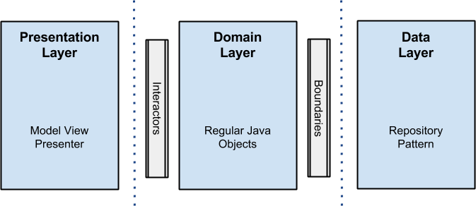
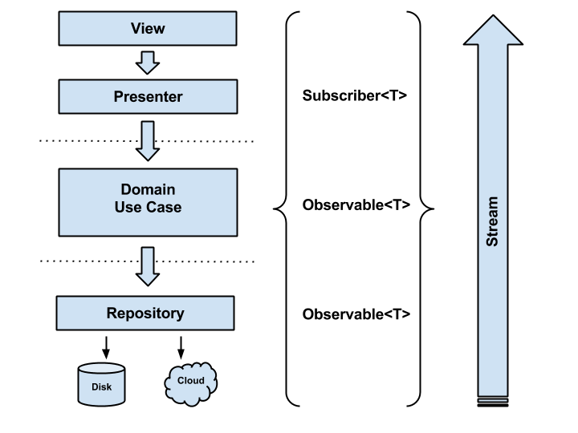
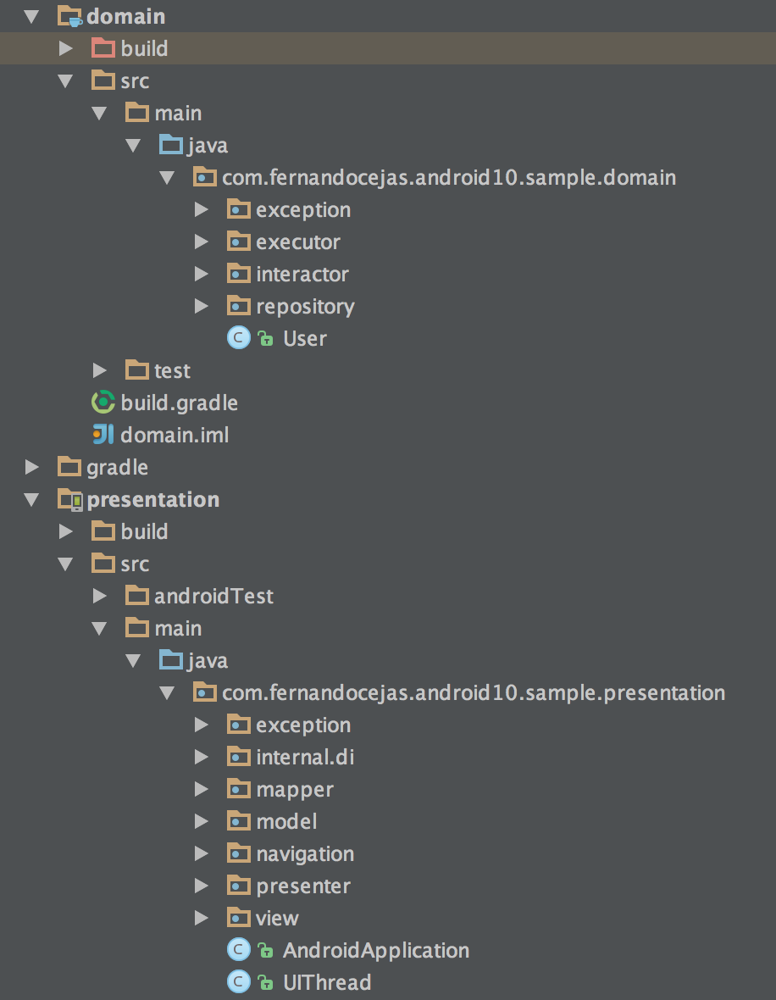
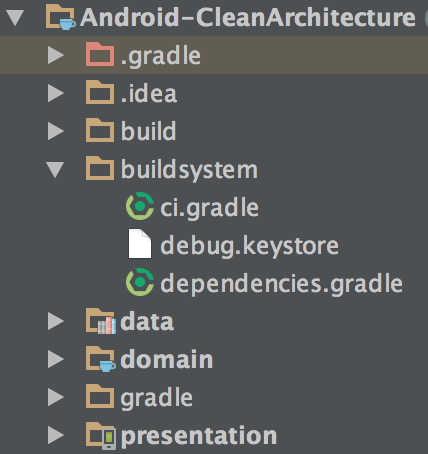

本文为翻译，在原文的基础上略有改动
http://fernandocejas.com/2015/07/18/architecting-android-the-evolution/
在开始之前，你最好阅读过这篇文章 （ http://xuyushi.github.io/2016/07/19/Android%20clean%20architecting/ ）

Architecture evolution
进化是一个循序渐进的过程，其中的一部分变的不同通常是变得更复杂更好
可以这么说，软件的发展很大程度上是软件architecture的发展。事实上，一个好的软件设计能帮助我们成长，同时能在不需要重写的情况下，帮助我们更好的扩展。
在这篇文章中，我将指出我认为重要点和关键点，让你对 Android 的代码结构更清晰，请记住这张图片，let's stared.

Reactive approach: RxJava
这里我不再过多说 Rxjava 的好处(你可以看看这个 )，现在有很多关于 rxjava 的教程 ，我会指出它在 android 开发中的亮点，已经它是如何帮助我进化 clean架构的。
首先，我选择了响应式编程（也就是 rxjva，译者注）来使得use cases（也被称为 interactors）返回 Observables
public abstract class UseCase {
private final ThreadExecutor threadExecutor;
private final PostExecutionThread postExecutionThread;
private Subscription subscription = Subscriptions.empty();
protected UseCase(ThreadExecutor threadExecutor,
PostExecutionThread postExecutionThread) {
this.threadExecutor = threadExecutor;
this.postExecutionThread = postExecutionThread;
}
protected abstract Observable buildUseCaseObservable();
public void execute(Subscriber UseCaseSubscriber) {
this.subscription = this.buildUseCaseObservable()
.subscribeOn(Schedulers.from(threadExecutor))
.observeOn(postExecutionThread.getScheduler())
.subscribe(UseCaseSubscriber);
}
public void unsubscribe() {
if (!subscription.isUnsubscribed()) {
subscription.unsubscribe();
}
}
}
可以看到，所有的 cases 都继承自这个抽象类，并且实现了其中的抽象方法buildUseCaseObservable()，这个方法干着实际的业务活最后返回 Observable
有一点需要强调一下，我们需要确保 execute()方法工作在独立的线程中。 这样能最小程度的阻塞 Android 的 主线程，
到目前为止，我们的 Observable
subscriber 长这样
private final class UserListSubscriber extends DefaultSubscriber<List<User>> {
@Override public void onCompleted() {
UserListPresenter.this.hideViewLoading();
}
@Override public void onError(Throwable e) {
UserListPresenter.this.hideViewLoading();
UserListPresenter.this.showErrorMessage(new DefaultErrorBundle((Exception) e));
UserListPresenter.this.showViewRetry();
}
@Override public void onNext(List<User> users) {
UserListPresenter.this.showUsersCollectionInView(users);
}
}
每个subscriber都是presenter中的一个内部类，并且继承自DefaultSubscriber<T>。DefaultSubscriber
当了解所有的细节之后，可以通过下面这张图了解整体的思路：

让我们来列举一下通过 Rxjava 我们能获得的好处
- 将
Observables和Subscribers解耦。使得维护和测试更方便 - 简化了异步的任务。java切换线程的操作还是比较复杂的。而且在 Android 中，我们需要在非主线程处理事务，在主线程更新UI，很容易出门"callbackhell",使得代码难以阅读
- 数据的传输和组织。我们在不影响客户端的情况下，可以轻易合并多个
Observables<T>。这使得我们的解决方案十分灵活 - 错误处理。所有的错误都可以在 subscribe 中处理。
在我看来，还是有缺点的。就是对于不了解这些概念的开发者需要一定的学习曲线。但是这是非常值得的。
Dependency Injection: Dagger 2
我不会过多的介绍依赖注入，因为在这篇文章已经介绍过了（ http://xuyushi.github.io/2016/07/16/Android%20Application%20从零开始%202%20——DI/ ），这篇文章我强烈建议你读一读。我一下就简单的介绍一下
值得一提的是，通过引入像 dagger2 这样的依赖注入工具我们可以：
- 代码的复用，因为依赖关系可以注入和外部配置。
- 当注入对象时，我们可以改变对象的实现即可，不需要再调用的代码处做修改。因为对象的构造和使用已经分离解耦
- 依赖可注入一个组件，它可能注入这些依赖它使测试更容易的mock实现。
Lambda expressions: Retrolambda
在我们的代码中使用 java8 的 lambdas ，相信没人会抱怨。他简化了我们的代码，比如
private final Action1<UserEntity> saveToCacheAction =
userEntity -> {
if (userEntity != null) {
CloudUserDataStore.this.userCache.put(userEntity);
}
};
不过，我在这里百感交集，我来解释下原因。事实证明，在@SoundCloud我们有大约Retrolambda的讨论，主要是是否要使用它，结果是：
- 优点：
- lambda表达式和方法的引用。
- Try with resources.
- Dev karma.（？？？）
- 缺点：
- Accidental use of Java 8 APIs.
- 3rd part lib, quite intrusive.
- 3rd part gradle plugin to make it work with Android.
最后的决定取决于是否能为我们解决问题：你的代码看起来更好，更具可读性，但这些都是可有可无的。因为现在大部分的牛逼的 IDEs 都包含了这些功能。自动了折叠了这些代码
Testing approach
在测试中，在这个例子的第一个版本没有关系大变动：
- Presentation Layer: 使用
android instrumentatio和espresso做集成 和功能测试 - Domain Layer: 使用
JUnit和mockito做单元测试 - Data Layer: 使用
Robolectric（因为这层有 Android 的依赖）和 junit、mockito做集成和单元测试。
Package organization
我认为代码/包的组织良好的架构的关键因素之一：封装结构是浏览源代码时由程序员遇到的第一件事情。一切都从它流。一切都依赖于它。
我们可以把你的应用程序划分成包2路径区分：
- 按层分包，每包中的内容通常不是密切相关，这导致低内聚 和 低模块化，包与包之间的高耦合。这将导致很多问题。例如，修改会发生在不同包的文件中，删除一个功能也会涉及到很多文件
- 按功能分包，试图将功能相关的文件放在同一封装中，这导致在高凝聚力和高度模块化，包和包带之间的最小耦合。每个文件紧密的放在一起，而不是分散在项目的个个角落
我的建议是按照功能分包，这有以下几个优点
* 模块化程度高
* 更简单的代码导航
* 范围最小
当你在团队合作时，代码所有权会更容易组织，更模块化，这是一个不断发展的组织的一场胜利，许多开发人员在同一代码库工作。

可以看到，我的项目结构看起来就像按层分包一样，我可能已经知道我错在哪里了。但在这种情况下我会原谅自己，因为这个例子的主旨是学习，是介绍 clean架构方法的主要概念。照我说的做，不要像我一样:) （貌似作者对其项目的分包不是很满意，不过我到觉得没啥不好，挺清晰的）
Extra ball: organizing your build logic
我们都知道，万丈高楼平地起，房子的地基很重要。软件开发也一样。构建系统（及其组织）是一个软件体系结构的一个重要的一步
在 Android 中 我们使用 gradle 来构建我们的项目。gradle 是一个与平台无关很牛逼的一个构建工具。这里说一下使用 gradle构建 应用时的一些技巧。

def ciServer = 'TRAVIS'
def executingOnCI = "true".equals(System.getenv(ciServer))
// Since for CI we always do full clean builds, we don't want to pre-dex
// See http://tools.android.com/tech-docs/new-build-system/tips
subprojects {
project.plugins.whenPluginAdded { plugin ->
if ('com.android.build.gradle.AppPlugin'.equals(plugin.class.name) ||
'com.android.build.gradle.LibraryPlugin'.equals(plugin.class.name)) {
project.android.dexOptions.preDexLibraries = !executingOnCI
}
}
}
apply from: 'buildsystem/ci.gradle'
apply from: 'buildsystem/dependencies.gradle'
buildscript {
repositories {
jcenter()
}
dependencies {
classpath 'com.android.tools.build:gradle:1.2.3'
classpath 'com.neenbedankt.gradle.plugins:android-apt:1.4'
}
}
allprojects {
ext {
...
}
}
...
这样你就可以使用apply from: ‘buildsystem/ci.gradle来设置你的 gradle 文件了。不要把所有的配置都写在一个build.gradle文件中，不然你的项目会变得难以维护
创建依赖
...
ext {
//Libraries
daggerVersion = '2.0'
butterKnifeVersion = '7.0.1'
recyclerViewVersion = '21.0.3'
rxJavaVersion = '1.0.12'
//Testing
robolectricVersion = '3.0'
jUnitVersion = '4.12'
assertJVersion = '1.7.1'
mockitoVersion = '1.9.5'
dexmakerVersion = '1.0'
espressoVersion = '2.0'
testingSupportLibVersion = '0.1'
...
domainDependencies = [
daggerCompiler: "com.google.dagger:dagger-compiler:${daggerVersion}",
dagger: "com.google.dagger:dagger:${daggerVersion}",
javaxAnnotation: "org.glassfish:javax.annotation:${javaxAnnotationVersion}",
rxJava: "io.reactivex:rxjava:${rxJavaVersion}",
]
domainTestDependencies = [
junit: "junit:junit:${jUnitVersion}",
mockito: "org.mockito:mockito-core:${mockitoVersion}",
]
...
dataTestDependencies = [
junit: "junit:junit:${jUnitVersion}",
assertj: "org.assertj:assertj-core:${assertJVersion}",
mockito: "org.mockito:mockito-core:${mockitoVersion}",
robolectric: "org.robolectric:robolectric:${robolectricVersion}",
]
}
apply plugin: 'java'
sourceCompatibility = 1.7
targetCompatibility = 1.7
...
dependencies {
def domainDependencies = rootProject.ext.domainDependencies
def domainTestDependencies = rootProject.ext.domainTestDependencies
provided domainDependencies.daggerCompiler
provided domainDependencies.javaxAnnotation
compile domainDependencies.dagger
compile domainDependencies.rxJava
testCompile domainTestDependencies.junit
testCompile domainTestDependencies.mockito
}
如果你希望在其他 module 中也使用同一的 version，或者使用同样的依赖，这样做很有效。另一个好处就是你可以在一个地方控制所有的依赖
Wrapping up
记住，没有银弹，但是每个好的软件架构会帮我们的代码结构保持整洁和健康，方便扩展便于维护
**我现在根据这个架构为模板做一个开源 APP，完成以后会开源，详见请见 http://xuyushi.github.io/tags/从零开始/ **